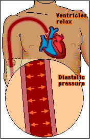

As you have seen, blood pressure is a measure of the pressure of the blood against the walls of a blood vessel. Clinically, blood pressure is usually measured in the brachial (arm) artery, so our discussion will focus on this specific location.
There are two components to blood pressure:
|  |
|
Next we will learn how blood pressure is measured.
 Continue to Understanding Blood Pressure.
Continue to Understanding Blood Pressure.